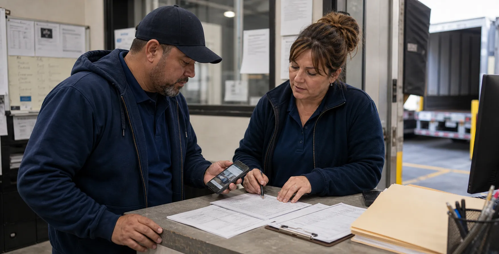
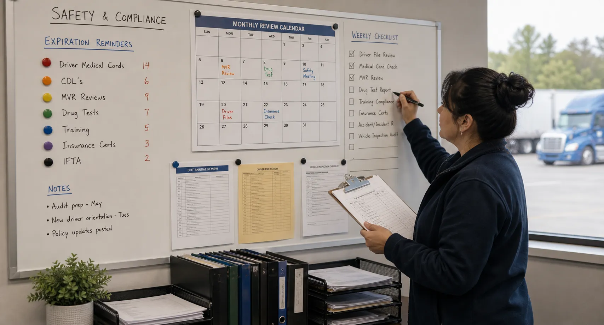
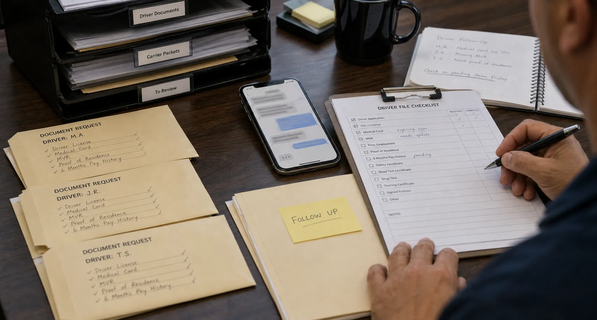

Driver & Compliance Management
Driver files, DQF, CDL, medical cards, MVR status, insurance, and credential exceptions stay tied to dispatch readiness.
Open driversOne operating record
Bring driver, carrier, document, dispatch, safety, and settlement evidence into one visible operating rhythm.
BOF operating modules
BOF helps the team answer the readiness question that still matters: can we trust the driver, documents, dispatch record, settlement packet, and customer handoff enough to act?
Driver files, DQF, CDL, medical cards, MVR status, insurance, and credential exceptions stay tied to dispatch readiness.
Open driversPOD, BOL, rate confirmation, lumper receipt, claim evidence, and missing-field review get a visible owner and consequence.
Open documentsLoads move from import to release with ready, watch, and hold states instead of scattered notes.
Open fleet readinessPay lines, deductions, billing packets, factoring support, and settlement holds stay connected to the operating record.
Open settlementsCustomer intake, quotes, shipments, tracking, documents, and billing can be shown without losing the BOF readiness trail.
Open portalOwner-facing reports summarize blockers, owners, packet status, and operational follow-through without unsupported performance promises.
Open command centerDocument intake and vault views organize records for review, enlargement, ownership, and audit-friendly retrieval.
Open intakeNetwork-facing views support carrier readiness, packet visibility, and assessment routing while preserving aggregator-specific CTA language.
Open aggregatorsAI-assisted operations support
AI-assisted review supports BOF by reading for missing packet details, expired dates, incomplete fields, repeated exception patterns, and likely follow-up owners. BOF turns that faster triage into a human-reviewed readiness answer with evidence attached.
Find the missing proof, unreadable upload, unsigned form, or date problem before it becomes a dispatch delay.
Surface the blocker, owner, and next action so managers do not waste time rebuilding the queue by hand.
AI supports BOF's managed follow-up: faster first pass, clearer escalation, and a cleaner record for the fleet.
Release decisions remain BOF-reviewed and manager-readable, with documents, audit notes, and consequences attached.
Operating answer
It is the readiness layer for fleets that need documents, drivers, carriers, exceptions, and leadership decisions to line up before someone releases work into the field.
Fleet owners, operations leads, dispatchers, document owners, and safety/compliance managers who need the same operating answer.
Open safety pathWhat can move, what is blocked, who owns the fix, which document supports the decision, and what happens next.
The fleet's existing tools can keep the load context while BOF keeps the readiness record, exception owner, and release decision defensible.
Start with one fleet record and enter the guided path with enough detail to make the conversation real.
Managed work in view
BOF supports the daily handoffs between field proof, carrier readiness, safety reviews, and follow-up ownership.

POD, BOL, and phone evidence are compared before the record closes.
Internal lanes still need visible status, owner, and consequence.
Higher-scrutiny work needs clean packet ownership and review history.

Expirations and reviews become visible work, not a hidden spreadsheet.

Requested, received, reviewed, and approved states stay trackable.
Managers see the blocker and next action instead of rebuilding it manually.
Next step
Bring one load, driver file, document packet, carrier question, or release problem, then inspect the records that decide what happens next.